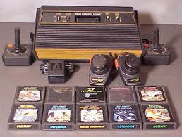

Introdução
Desde a década de 1970, os jogos eletrônicos atraem adeptos de todas as idades. Para os mais "velhinhos" vale lembrar os primeiros videogames e sua evolução: Telejogo, Atari, Odyssei, Megadrive, Nintendo, Game Boy entre outros. Atualmente, os jogos avançaram muito em termos de gráficos e história. Consoles como, por exemplo, Playstation 4 e Xbox One têm levado adultos e crianças ao mundo da diversão eletrônica. Não podemos esquecer dos games de computador que também evolui cada vez mais. Em casa ou nas Lan Houses (locais onde os gamemaníacos jogam em rede), jovens de todas as idades divertem-se ao clique de mouses ou joysticks. Conheça abaixo os principais videogames.
Origem: os primeiros videogames
Os primeiros videogames datam da década de 1950. Estudantes de computação criaram alguns jogos eletrônicos bem simples, como parte de suas pesquisas computacionais. Porém, foi somente na década de 1970, que os videogames ganharam as lojas e passaram a ser comercializados. O primeiro videogame foi o Pong, lançado em 1972 pela empresa Atari. Na década de 1980, conhecida como a Era de Ouro dos Videogames, chegaram os consoles que fizeram grande sucesso: Atari 2600, Odissey, Intelevison, entre outros.
Playstation
Desenvolvido pela Sony, este videogame roda CDs e DVDs (Região 1). Os games em DVD tem capacidade para armazenar até 4,7 GB de dados. O Playstation II foi o primeiro videogame a possuir um processador de 128 bits. Ele possui 32 megas de memória RAM principal, 4 megas de memória VRAM para texturas. Outra qualidade deste potente videogame é uma placa de vídeo de altíssimo desempenho, a Graphics Sinthesizer. Seu joystick ainda vibra, dando muito mais realismo e emoção aos jogos. Com ele, o gamemaníaco pode rodar todos os jogos do Playstation 1, graças ao processador antigo que carrega em seu interior, que executa todas as operações de entrada e saída de dados. Outra vantagem é que pode ser utilizado na horizontal e na vertical. O ps2 também possui um recurso que torna capaz de jogar on line de sua casa com outros jogadores, através da Internet.
Playstation 3

Em 2006, o lançamento do console que revolucionou o mundo dos videogames. Diversas inovações tecnológicas foram implantadas, com destaque para o processamento de gráficos. Outra novidade deste videogame foi a inclusão de um tocador de blue ray embutido no console.
Playstation 4 e 5
O PlayStation 4, atual videogame da Sony, lançado em novembro de 2013, pode ser considerado uma verdadeira central de entretenimento. Pequeno quando comparado à primeira versão do PS3 e com um visual elegante, o PS4 teve uma grandiosa repaginada com uma navegação mais rápida e sem dificuldade. Graças à funcionalidade multitarefas, é possível realizar funções simples, como a configuração da rede sem interromper o jogo. O poderoso videogame da Sony conta com processadores personalizados de 8 GB de memória, o que representa um ambiente perfeito para a melhor experiência com gráficos complexos e de alta fidelidade. Envolvente e dinâmico em todos os sentidos!Mantendo o Blu-Ray como mídia física para os jogos, o console permite que muitos jogos também sejam adquiridos online, diretamente pela PlayStation Store. Com 500 GB de espaço mínimo no HD, há espaço de sobra para seus jogos. Para facilitar, o download pode ser feito até mesmo com o console em stand by, não necessitando deixá-lo ligado durante uma madrugada. O PlayStation 5 possui uma unidade de estado sólido personalizada projetada para a leitura de dados de alta velocidade para permitir melhorias significativas no desempenho gráfico. O hardware também possui uma GPU AMD personalizada capaz de fornecer suporte a Ray-tracing, displays de resolução 4K e até 120 quadros por segundo, um novo hardware de áudio para efeitos de áudio 3D em tempo real e retrocompatibilidade com a maioria dos jogos do PlayStation 4 e PlayStation VR.
X-Box
O videogame da Microsoft também possui características capazes de deixar os jogos com
extremo realismo. Seu poderoso processador de 733MHZ é capaz de efetuar milhões de movimentos
e gráficos ao mesmo tempo, deixando os jogos extremamente rápidos, coloridos e com uma realidade
impressionante. Possui uma porta Ethernet acoplada, recurso que possibilita o jogo on line e em rede.
Em 2006, a Microsoft lançou o X-Box 360. O novo console contava com recursos avançados e
jogos com gráficos complexos. Já o Xbox One (último lançamento da Microsoft no mundo dos consoles)
foi lançado em novembro de 2013.
No final de 2020, a Sony lançara o Xbox Series X.
Computador
Os computadores já são considerados um dos objetos domésticos de maior importância dentro das casas de habitantes do mundo todo. Além de proporcionar agilidade no trabalho e ter ampliado as formas de comunicação, também se tornou num importante equipamento de entretenimento. Com poderosos recursos gráficos, os computadores são muito utilizados para jogar jogos eletrônicos. Jovens e adultos passam muitas horas na frente da telinha jogando games de aventura, estratégia, esportes e ação. Nas Lan Houses, os adolescentes e adultos podem desafiar amigos e jogadores desconhecidos em partidas emocionantes jogadas em rede.
Considerações
Obrigado por quem veio ver a pagina, estou retomando um progresso que ja deveia estar avançado, depois de arrumar minha vida estou em busca do meu sonho novamente. espero recuperar o tempo perdido estou estudando todos os dias para que não fique muito para trás este é apenas um site texte com a pratica dos conhecimento de um curso feito em HTML e CSS puro.